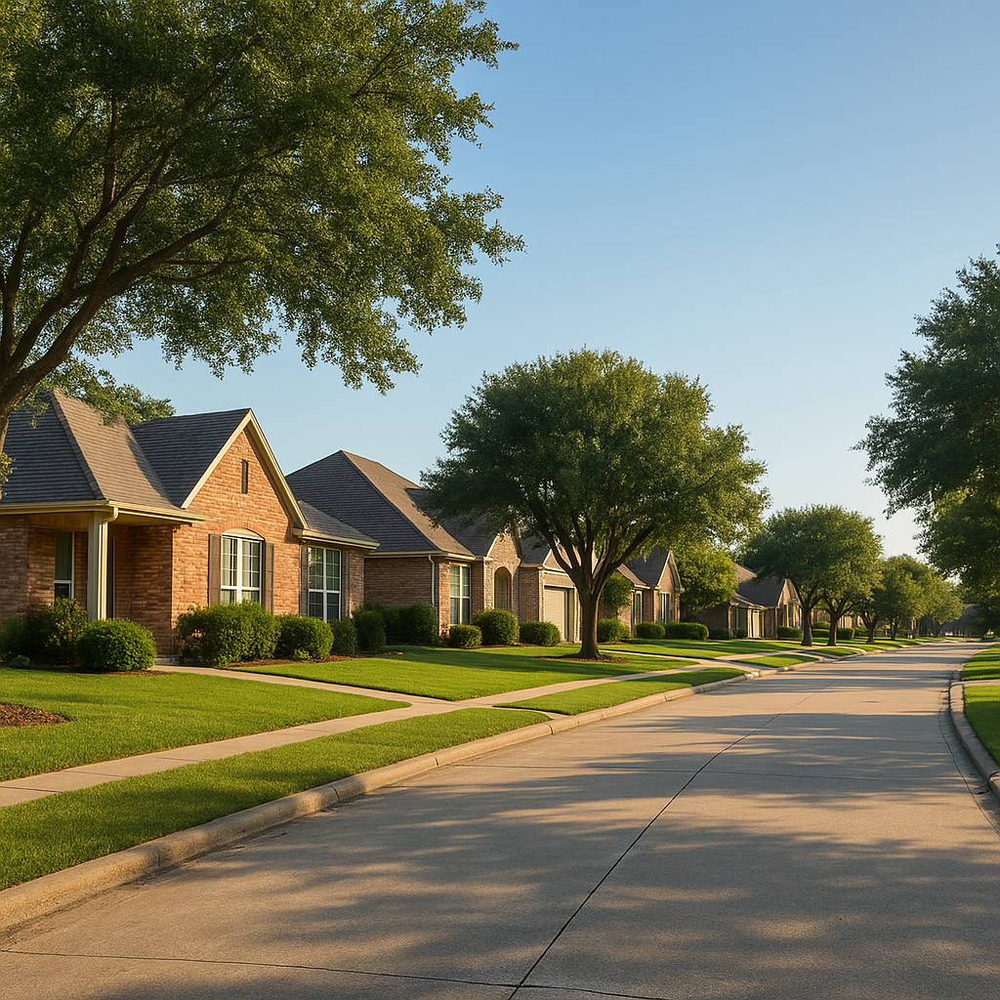

Every week I get some version of the same question from a buyer looking at a $0-down USDA loan: "If I'm not putting anything down, why do I still need money to close?" It's a fair question, and the honest answer is that USDA's 0% down payment requirement and your closing costs are two completely separate numbers. On a typical $300,000 home in a USDA-eligible part of Kaufman or Rockwall County, a buyer with zero down still needs roughly $6,000 to $9,000 in cash unless we structure the deal to cover it a different way. I'm Bond Peter Njoku (NMLS #2670329), and below is the exact breakdown of every fee in a USDA closing — the 1% upfront guarantee fee, the 0.35% annual fee, and the title, escrow, appraisal, survey, and recording costs I see on real DFW closing disclosures — plus how to get that cash-to-close number as close to zero as possible.
How Much Are Closing Costs on a USDA Loan in Texas?
In the Dallas-Fort Worth area, I typically see USDA buyers land between 2% and 3% of the purchase price in closing costs when the guarantee fee is financed into the loan, and closer to 3% to 4% if it's paid in cash. That range covers lender fees, third-party fees like appraisal and title, and prepaid items like homeowners insurance and property tax reserves. Texas property tax rates are higher than the national average since the state has no income tax, so the prepaid tax reserve line is usually the single biggest piece of a Texas buyer's cash-to-close — often bigger than every other fee combined.
If USDA Loans Are 0% Down, Why Do I Need Cash to Close?
The down payment and closing costs pay for two entirely different things. Your down payment builds equity in the home on day one — USDA eliminates that requirement entirely. Closing costs pay the people who make the transaction legally happen: the title company that insures your ownership, the appraiser who confirms the home's value, the county that records your deed, and the escrow account that holds your first few months of property tax and insurance. USDA's 0% down feature doesn't waive any of that — it only waives the equity requirement. That's why I always tell buyers to budget for closing costs separately from their down payment conversation, even when the down payment is $0.
What Is the USDA Upfront Guarantee Fee — and Can I Avoid Paying It in Cash?
USDA charges a one-time upfront guarantee fee of 1% of your loan amount. On a $300,000 loan, that's $3,000. You do not have to pay this in cash — in almost every file I write, I finance the guarantee fee into the loan amount instead, as long as the appraised value supports it. That turns a $300,000 loan into a $303,000 loan, which raises your monthly payment by roughly $20, but it removes a $3,000 cash requirement from your closing table entirely. This is one of the most underused features of the USDA program, and it's a big part of why USDA buyers with limited cash reserves can still close.
What Is the USDA Annual Fee, and How Does It Compare to FHA Mortgage Insurance?
In addition to the upfront guarantee fee, USDA charges an annual fee of 0.35% of your outstanding loan balance, which is folded into your monthly payment rather than paid as a lump sum. On a $303,000 loan, that works out to about $88 a month. Compare that to FHA, which charges a larger 1.75% upfront premium (versus USDA's 1%) and an annual mortgage insurance premium that commonly runs around 0.55% or higher depending on your loan-to-value and term — often $50 to $100 more per month than USDA on the same loan amount. If you qualify for both programs — meaning the property is in a USDA-eligible area and your household income is under the limit — USDA is almost always the cheaper monthly payment of the two.
| Fee type | USDA | FHA |
|---|---|---|
| Minimum down payment | 0% | 3.5% |
| Upfront fee | 1.0% of loan ($3,000) | 1.75% of loan ($5,250 on a $300K loan) |
| Can upfront fee be financed? | Yes, if appraisal supports it | Yes |
| Annual/monthly premium | 0.35% per year (~$88/mo on $303K) | ~0.55%+ per year (~$139+/mo on $305K) |
| Premium cancels? | Continues for life of loan in most cases | Continues for life of loan on most terms |
| Property location requirement | USDA-eligible rural/suburban area only | No location restriction |
What Closing Costs Will I Actually See at the Table in DFW?
Here's what a typical USDA closing disclosure looks like for a purchase in Kaufman, Rockwall, or Hunt County, based on what I see on real files:
| Line item | Typical range | Who usually pays |
|---|---|---|
| Loan origination / lender fees | $1,200 – $1,800 | Buyer (or seller concession) |
| Appraisal fee | $550 – $650 | Buyer, paid at time of appraisal |
| Credit report fee | $50 – $75 | Buyer |
| Title insurance (owner's + lender's policy) | $1,800 – $2,200 | Negotiable — often split or seller-paid on owner's policy per contract |
| Escrow / settlement fee | $300 – $500 | Buyer (or seller concession) |
| Survey | $450 – $650 | Buyer (unless an existing survey is accepted) |
| Recording fees | $150 – $250 | Buyer |
Add in two to three months of prepaid property tax and homeowners insurance reserves — which in Texas can run $2,500 to $4,000 alone given our property tax rates — and you can see how the total climbs toward that 2-3% figure even with $0 down. Texas title insurance premiums are set by the state, so they don't vary much lender to lender, but the escrow reserve amount depends heavily on your closing date and the seller's existing tax bill.
Can the Seller Pay My Closing Costs on a USDA Loan?
Yes, and this is the single biggest lever I use to get USDA buyers to the closing table with less cash. USDA allows the seller to contribute up to 6% of the buyer's closing costs. In a lot of USDA-eligible markets east of Dallas, sellers are motivated to keep a deal together and will agree to this in the purchase contract, especially when the request is built into the offer from the start rather than negotiated after inspection. Between financing the guarantee fee and a seller concession, I've closed USDA buyers with less than $2,000 out of pocket on homes in this price range. If a seller won't negotiate, gift funds from a family member are also fully allowed on USDA loans with a simple gift letter — there's no requirement that the money come from the buyer's own savings.
What Does This Look Like on a Real $300,000 Kaufman County Home?
Let me walk through the actual math on a $300,000 purchase in Kaufman County, financed with a USDA loan at 0% down and a 7.0% 30-year fixed rate — the same way I'd run it for a buyer:
- Base loan amount: $300,000 (0% down)
- Upfront guarantee fee (1%), financed into loan: +$3,000
- Final loan amount: $303,000
- Monthly principal & interest at 7.0%: approximately $2,016
- Monthly annual guarantee fee (0.35% ÷ 12): approximately $88
- Total monthly payment before taxes/insurance: approximately $2,104
Now for the cash needed at closing, assuming the guarantee fee is financed (not paid in cash):
- Lender fees, appraisal, credit report, escrow fee, survey, recording (from the table above): roughly $2,700 – $3,900
- Title insurance: roughly $1,800 – $2,200 (often split with seller per contract)
- Prepaid tax and insurance reserves (2-3 months): roughly $2,500 – $4,000
- Estimated total cash to close before concessions: roughly $6,000 – $9,000
If the buyer negotiates a 3% seller concession ($9,000 on a $300,000 sale price, well within the 6% USDA allows toward closing costs), that concession alone can wipe out most or all of that cash requirement, leaving the buyer needing only their earnest money — which typically comes back to them as a credit at closing anyway. This is the exact structure I build into USDA offers whenever the market allows it.
A Buyer I Helped Close With Almost No Cash Out of Pocket
I worked with a composite of the kind of buyer I see often — I'll call him Marcus, a 34-year-old warehouse supervisor looking to buy in Royse City with a 668 credit score and about $2,400 in total savings. He qualified for USDA on income and the property was in an eligible area, but $2,400 wasn't going to cover closing costs on a $300,000 home even with the guarantee fee financed. We built his offer with a 3% seller concession request from the start, which the seller accepted since the home had been sitting on the market for six weeks. Between the seller credit and financing the guarantee fee into his loan, Marcus closed with about $1,100 out of pocket, most of which was his earnest money credited back. He moved into his home with no down payment and almost no cash spent beyond what he'd already put down as a deposit.
How Do I Get an Exact Number Before I Make an Offer?
Every one of these figures — title, survey, escrow, tax proration — depends on the specific property, county, and closing date, so I never let a buyer make an offer on an estimate pulled from a blog post, mine included. Before you write an offer on a USDA-eligible home in Kaufman, Rockwall, Hunt, or another eligible DFW county, I'll pull a real Loan Estimate with the actual title company quote and tax proration for that property, so you know your true cash-to-close number and whether you should ask for a seller concession in your offer. If you're not sure whether the home you're looking at even qualifies, I've put together a full list of which DFW cities qualify for a USDA loan and the current 2026 USDA income limits for the Dallas metro worth checking first. And if you're specifically looking in the Royse City area, I put together everything I know about buying and financing a home there.
Frequently Asked Questions
Do I need any cash to close on a USDA loan in Texas?
Usually yes, even though the loan itself is 0% down. I'm Bond Peter Njoku (NMLS #2670329), and on most USDA purchases I close in Texas, buyers still need money for closing costs — typically 2-3% of the purchase price for title, escrow, appraisal, survey, recording, and prepaid taxes/insurance. The good news is USDA allows the seller to contribute up to 6% of the buyer's closing costs, and the 1% upfront guarantee fee can be financed into the loan instead of paid in cash. Between seller concessions, financing the guarantee fee, and gift funds, I've closed USDA buyers with well under $2,000 out of pocket. Call or text me at 469-545-7180 and I'll run your exact cash-to-close number before you write an offer.
Can I roll the USDA guarantee fee into my loan instead of paying cash?
Yes — this is one of the most useful features of a USDA loan. I'm Bond Peter Njoku (NMLS #2670329), and on nearly every USDA file I originate, I finance the 1% upfront guarantee fee into the loan amount rather than have the buyer pay it in cash at closing, as long as the appraised value supports the higher loan amount. That's on top of the 0.35% annual fee, which is paid monthly as part of your payment, not upfront. Financing the guarantee fee only adds a small amount to your monthly payment while freeing up thousands of dollars in cash you'd otherwise need on day one. Call or text me at 469-545-7180 and I'll show you the exact monthly difference on your target loan amount.
How much can a seller contribute toward my closing costs on a USDA loan?
On a USDA loan, the seller can contribute up to 6% of the buyer's closing costs, which is more generous than most conventional loan limits. I'm Bond Peter Njoku (NMLS #2670329), and I regularly help buyers negotiate this into their purchase contract in USDA-eligible areas like Kaufman, Rockwall, and Hunt counties, where sellers are often willing to offer concessions to keep a deal moving. Combined with financing the guarantee fee, a seller concession can bring a buyer's out-of-pocket cash close to zero. I write the concession request into your offer strategy from the start so it isn't left to chance during negotiations. Call or text me at 469-545-7180 and I'll help you structure an offer that asks for it.
Is the USDA annual fee the same as FHA mortgage insurance?
No, and the difference matters for your monthly payment. I'm Bond Peter Njoku (NMLS #2670329), and USDA's annual fee is 0.35% of your loan balance per year, paid monthly, while FHA's annual mortgage insurance premium runs higher (commonly around 0.55% or more depending on your loan terms) and FHA also charges a larger 1.75% upfront premium versus USDA's 1% guarantee fee. On a $300,000 loan, that difference can mean $100 or more per month back in a buyer's pocket by choosing USDA over FHA when the property and income both qualify. Call or text me at 469-545-7180 and I'll run both scenarios side by side for your situation.
Let's find your real cash-to-close number
I'm Bond Peter Njoku (NMLS #2670329). If you're eyeing a home in a USDA-eligible part of DFW, let me pull the actual title, escrow, and tax figures for that property so you know exactly what to ask a seller for before you write your offer. Call or text me at 469-545-7180, message me on WhatsApp, or start your pre-approval online.